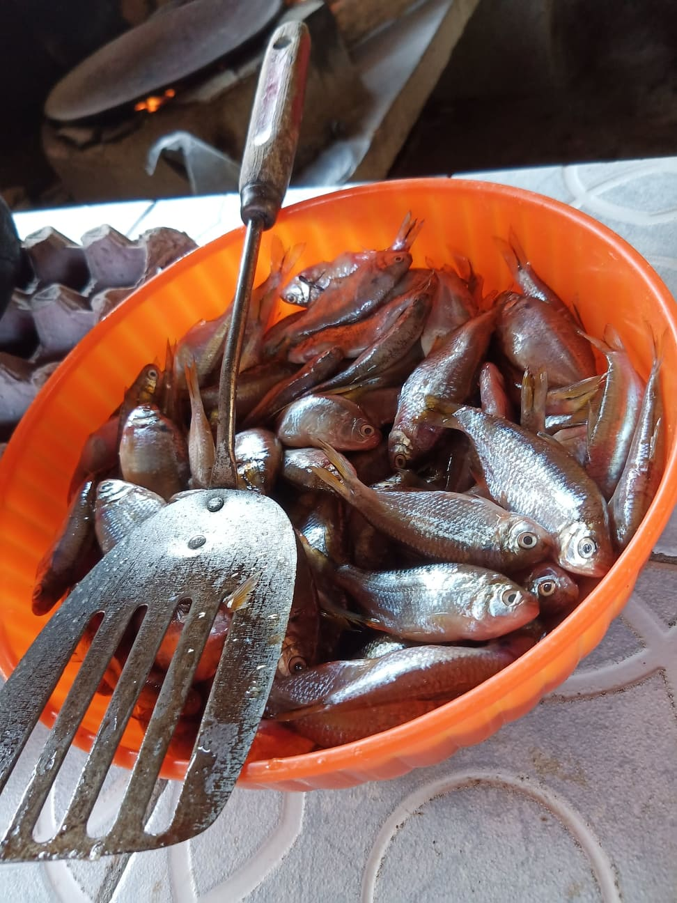
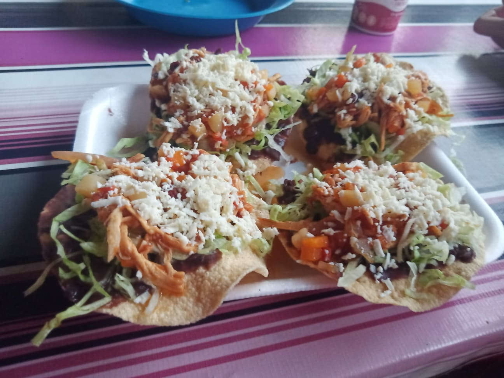
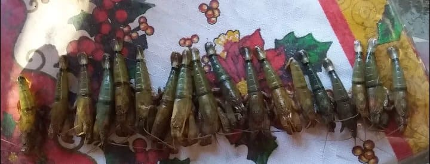
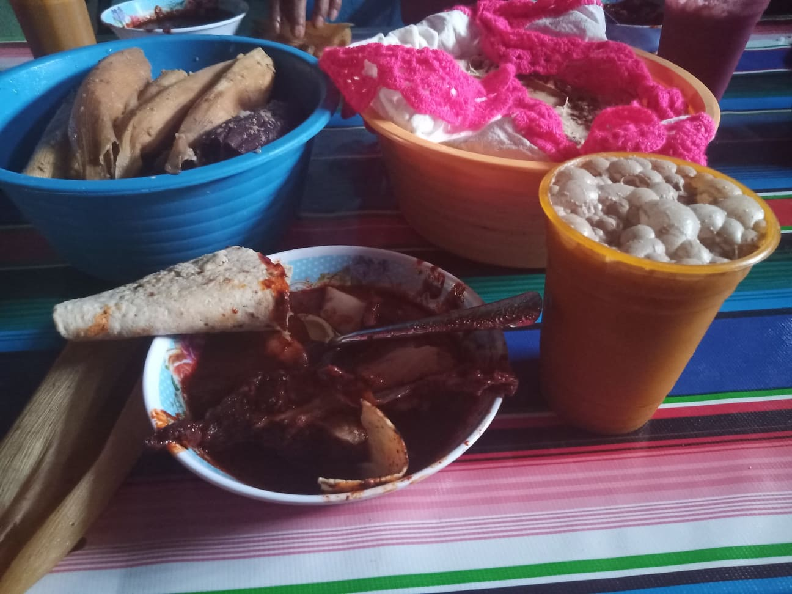
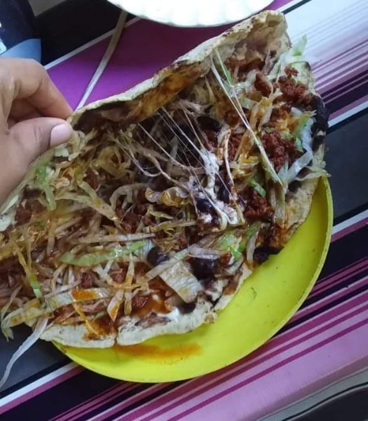
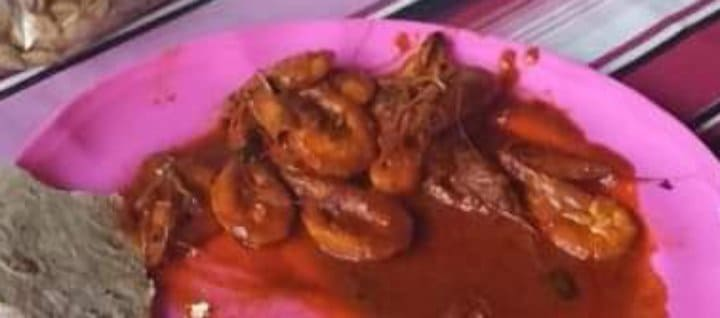
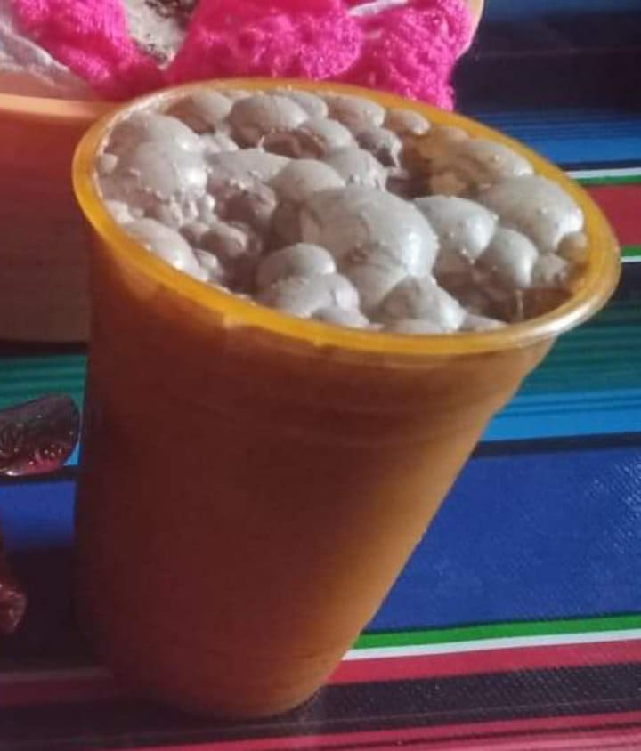
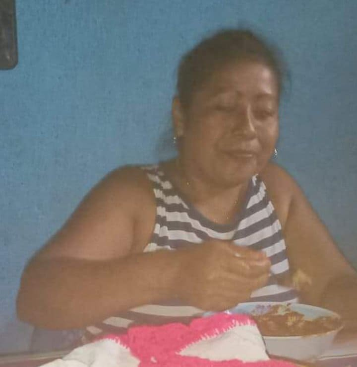

Nuestro Trabajo
Somos una pequeña cocina en la cual laboran personas de nuestro estado, nos dedicamos especialmente a la elaboración y venta de comida 100% natural con grandes estándares de calidad que nos compromete con la zona Costa Chica de Guerrero.

Atención y Servicio

Variedad

Calidad
Platillos
Deliciosos platillos donde puede degustar en COCINA DOÑA MINERVA.

Mole con tamales de arroz
Hecho con ingredientes 100% naturales.

Quesadillas
Para cualquier ocasión.

Camarones
No podía faltar los mariscos en nuestra cocina, frescos y de calidad obtenidos de nuestra región.

Chilate
Para el calor el chilate la bebida más conocida de Guerrero, refrescante y delicioso.
Contactanos
Estamos ubicados en el estado de Guerrero.

"Buena venta"